🚀 Step-by-Step Guide: Installing Rancher Desktop and Using Kubernetes on Windows 11
Remove the docker desktop one for starters
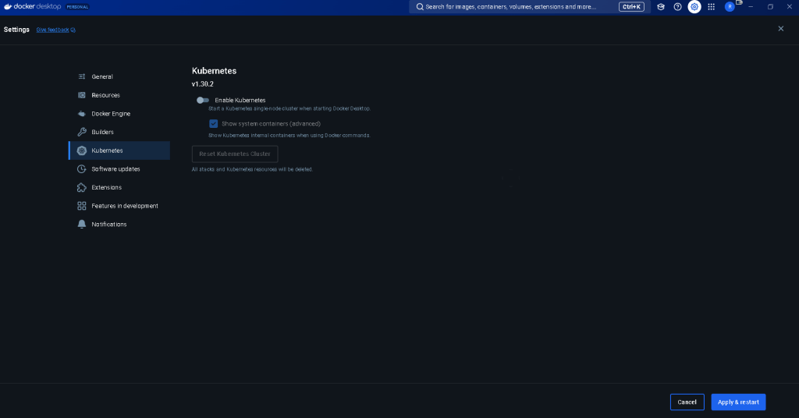
Setting up Kubernetes on your local machine has never been easier thanks to Rancher Desktop. If you're running Windows 11 and want to use Kubernetes locally, you’re in the right place! In this guide, I’ll show you how to install Rancher Desktop and get started with Kubernetes using kubectl on Windows 11. Let’s dive in! 🎯
🛠️ Step 1: Install Rancher Desktop on Windows 11
1.1 Download Rancher Desktop
Head over to the official Rancher Desktop website and download the latest Windows installer (.exe).
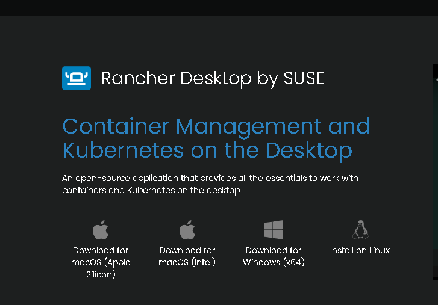
1.2 Run the Installer
-
Double-click the
.exefile to start the installation. -
Follow the on-screen instructions to complete the installation.
💡 Rancher Desktop requires WSL 2 (Windows Subsystem for Linux). Make sure it is enabled.
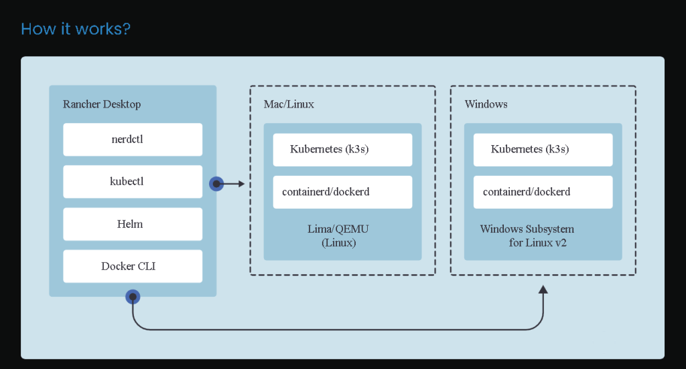
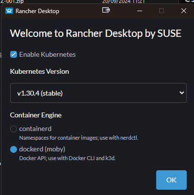
1.3 Enable WSL 2 on Windows 11 (if not already enabled)
If WSL 2 isn't already enabled, follow these steps:
-
Open PowerShell as Administrator:
Press Win + X and choose Windows Terminal (Admin). -
Run the WSL Installation Command:
In the terminal, run the following command to install WSL and set WSL 2 as the default version:
wsl --install
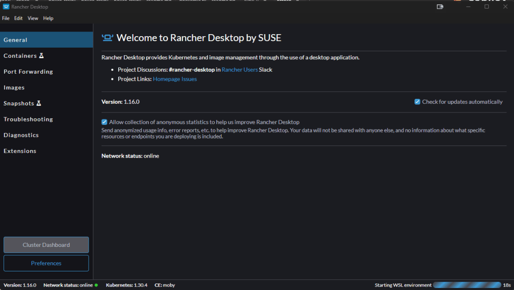
- Restart Your Computer:
After installation, restart your system to ensure everything is set up correctly.
🔧 Step 2: Setting Up Kubernetes in Rancher Desktop
After successfully installing Rancher Desktop, it's time to configure Kubernetes.
2.1 Launch Rancher Desktop
Click the Start menu, search for Rancher Desktop, and open the application.
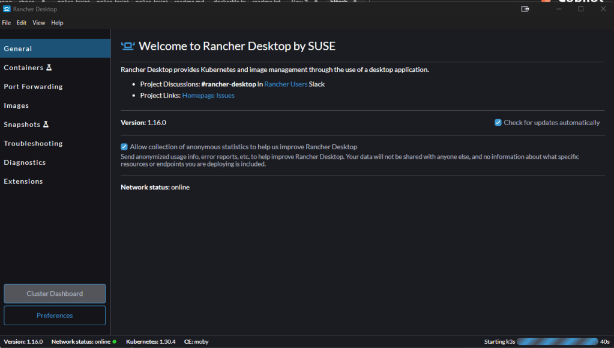
2.2 Kubernetes Settings
-
Open the Settings Menu:
Once Rancher Desktop is running, click the Settings gear icon on the top right corner. -
Configure Kubernetes:
Under Kubernetes Settings, choose the version of Kubernetes you'd like to install.
💡 It's recommended to stick to the stable version unless you're exploring specific features.
-
Select Container Runtime:
Rancher Desktop allows you to choose between container runtimes. If you're unsure, stick with containerd, the default option. -
Enable Kubernetes:
After configuring, make sure to toggle the Kubernetes option to ON. This will start the Kubernetes services on your machine. -
Wait for Kubernetes to Install:
Rancher Desktop will now download and configure your chosen Kubernetes version. This may take a few minutes, so grab a coffee ☕ while it sets up!
Screenshot
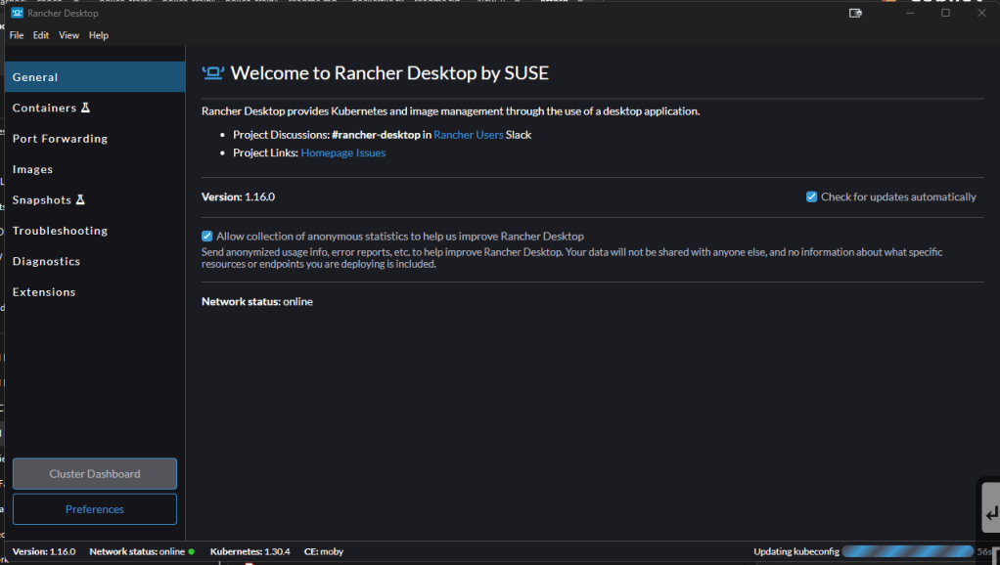
🖼️
Once configured, you should see the Kubernetes dashboard indicating that everything is running smoothly.
Before
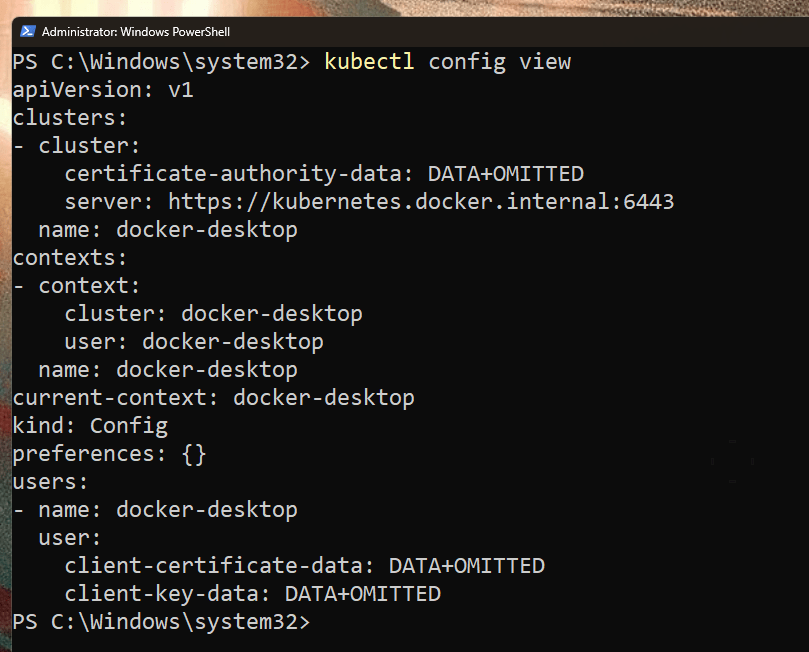
After
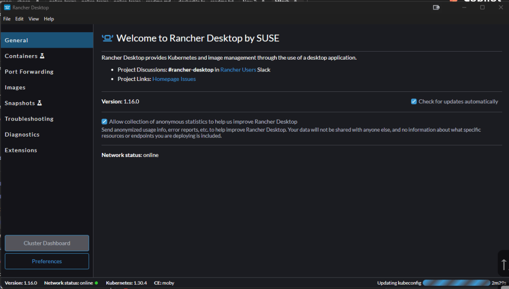
Stuck and docker engine restart
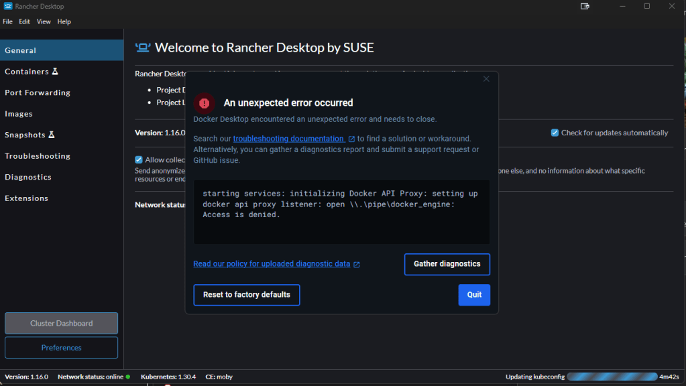
💻 Step 3: Using Kubernetes with kubectl on Windows 11
Once Rancher Desktop is up and running, you’ll want to interact with your Kubernetes cluster using kubectl, which is installed automatically with Rancher Desktop.
3.1 Open PowerShell or Windows Terminal
Press Win + X and choose Windows Terminal (or PowerShell) to open a command-line interface.
3.2 Test Kubernetes Connection
Run the following command to check if kubectl is installed and working:
kubectl version --client
You should see the kubectl version displayed, confirming that it's installed.
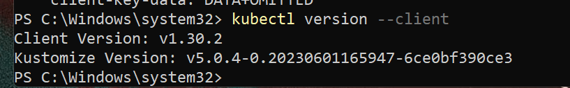
3.3 Check Kubernetes Nodes
Now, verify that your Kubernetes cluster is running by checking the nodes:
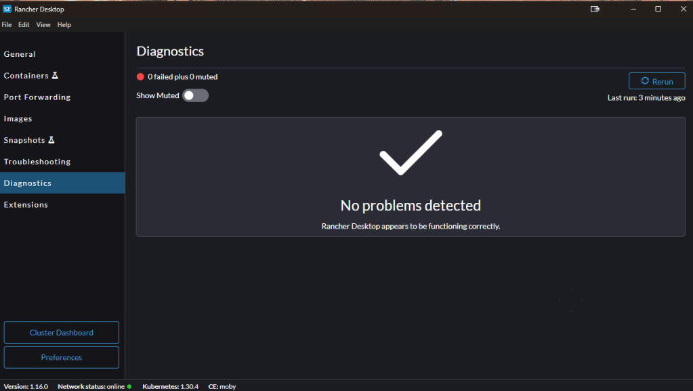
kubectl get nodes
You should see output similar to:
NAME STATUS ROLES AGE VERSION
rancher-desktop Ready control-plane 10m v1.24.0
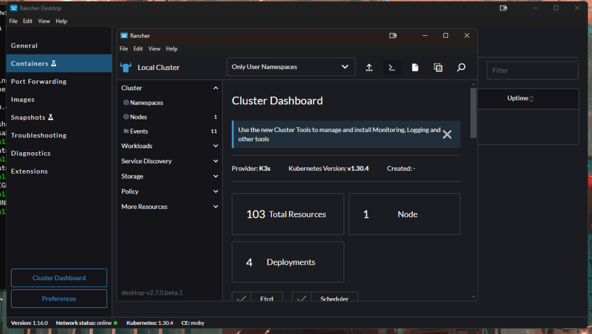
🎉 Congratulations! Your local Kubernetes cluster is now fully operational!
Dashboard actions
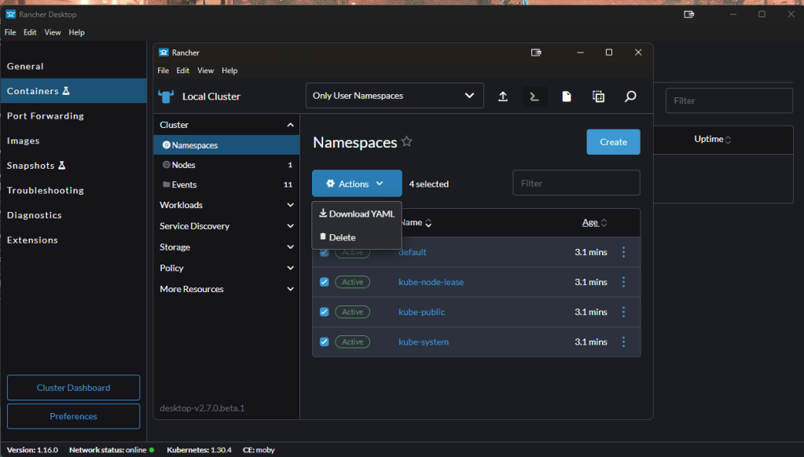
🔥 Step 4: Deploy Your First Kubernetes App
Now that Kubernetes is running, let’s deploy a simple app.
- Create a deployment using the nginx container image:
kubectl create deployment my-nginx --image=nginx
- Expose this deployment as a service:
kubectl expose deployment my-nginx --port=80 --type=NodePort
- Check the status of the pods:
kubectl get pods
- Access the service by finding the NodePort:
kubectl get service my-nginx
This will give you the details on which port the service is exposed. You can then access it via localhost on that port.
🌐 Troubleshooting WSL 2 Issues
If you encounter issues with WSL 2 or Rancher Desktop, try the following:
- Reinstall WSL 2:
Run the following command in PowerShell (Admin) to update and reinstall WSL 2:
wsl --update
- Check WSL 2 Version:
Ensure that your WSL version is set to WSL 2. You can check with:
wsl --list --verbose
If you see that any Linux distribution is set to WSL 1, you can upgrade it to WSL 2 with:
wsl --set-version
🎯 Why Use Rancher Desktop on Windows 11?
Rancher Desktop simplifies the complexity of managing containers and Kubernetes, allowing you to work faster and more efficiently. Here are a few reasons I recommend it:
-
🐳 Docker Replacement: It replaces Docker Desktop, integrating container runtime and Kubernetes in one tool.
-
🌍 Cross-Platform Support: Works across Windows, macOS, and Linux seamlessly.
-
⚙️ Version Switching: Easily switch between Kubernetes versions without reinstalling.
🎥 Final Thoughts
Rancher Desktop is a must-have tool for developers who want a local Kubernetes environment without the overhead of cloud services. Its ease of use, coupled with the powerful features of Kubernetes, makes it a no-brainer for development on Windows 11.
I hope this guide helped you get started with Rancher Desktop on Windows 11. Feel free to reach out to me if you have any questions!
🔗 Connect with me:
-
💼 LinkedIn: https://www.linkedin.com/in/rifaterdemsahin/
-
🐦 Twitter: https://x.com/rifaterdemsahin
-
🎥 YouTube: https://www.youtube.com/@RifatErdemSahin
-
💻 GitHub: https://github.com/rifaterdemsahin
Happy coding! 👨💻
Stuck At
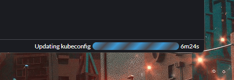
If you're stuck at the step where Rancher Desktop is updating the kubeconfig or having issues with it, this can happen due to a few common reasons. Let's walk through how to troubleshoot and resolve this problem. 🚑
🛠️ Step 1: Check if kubectl is Pointing to the Right Context
Sometimes, the kubeconfig file doesn’t get updated correctly, or kubectl isn't pointing to the correct context. You can verify this by running:
kubectl config get-contexts
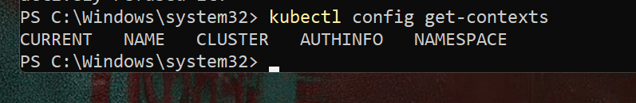
This will list all available contexts. Look for something like rancher-desktop in the list. If it's not selected, switch to the Rancher Desktop context with the following command:
kubectl config use-context rancher-desktop
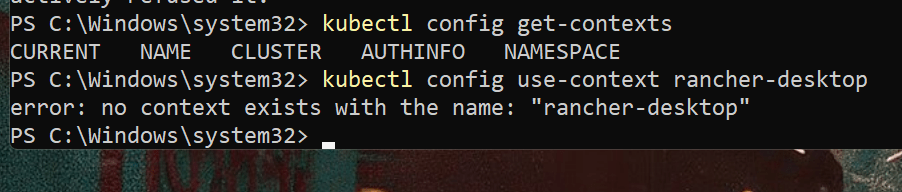
🛠️ Step 2: Manually Update the Kubeconfig Path
Rancher Desktop might not have automatically updated the kubeconfig path, which tells kubectl where to find your cluster configuration. You can manually ensure that the correct kubeconfig file is being used.
-
Open PowerShell or Windows Terminal as Administrator.
-
Check if the kubeconfig file exists at the default path for Rancher Desktop:
$HOME/.kube/config
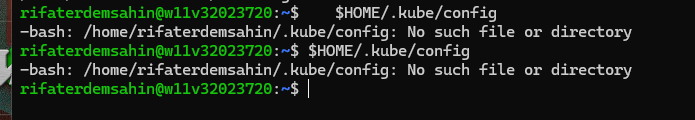
- If the config file isn't there, manually set the environment variable to the correct path. Run this command:
$env:KUBECONFIG="$HOME/.kube/config"
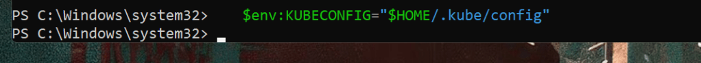
You can confirm the file path is correct by running:
echo $env:KUBECONFIG
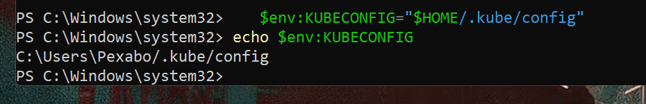
After setting it, try running:
kubectl get nodes
If the configuration is correct, you should see the nodes listed.
🛠️ Step 3: Restart Rancher Desktop
Sometimes, Rancher Desktop needs to be restarted for the configuration to be applied properly. Close Rancher Desktop completely, and then:
-
Right-click on the Rancher Desktop icon in the system tray and select Quit.
-
Open Rancher Desktop again and wait for it to load fully.
-
After reopening, try running:
kubectl get nodes
If it's still not working, Rancher Desktop may not have been able to correctly set the context. You can recreate the kubeconfig by following the next step.
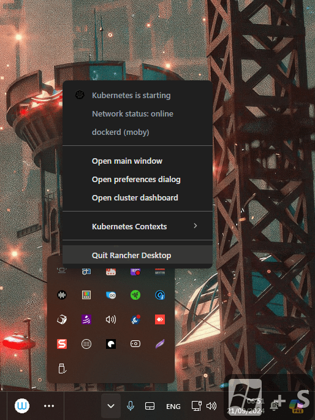
Run as Admin
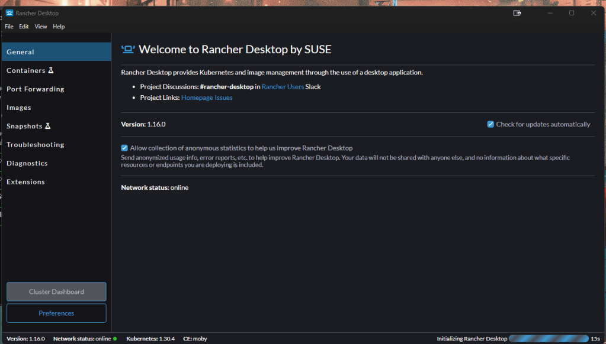
Moves to starting
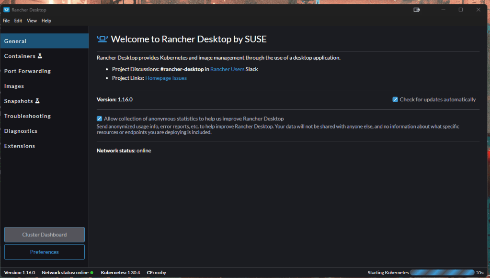
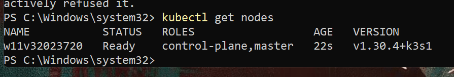
🛠️ Step 4: Recreate Kubeconfig
If you suspect that the kubeconfig is corrupted or missing important data, you can recreate it:
-
Open Rancher Desktop and go to Preferences > Kubernetes.
-
There should be an option to Reset Kubeconfig or Recreate Kubeconfig.
-
Click that, and it will regenerate the kubeconfig file.
Once regenerated, recheck using:
kubectl config view
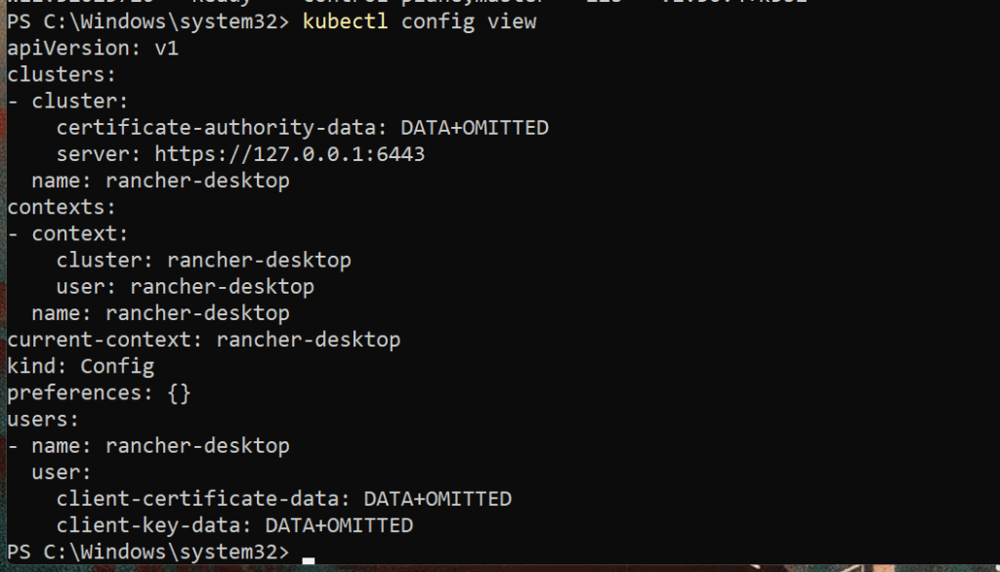
Then test with:
kubectl get nodes
🛠️ Step 5: WSL 2 Networking Issues (Optional)
If you are using WSL 2 and the steps above don't work, there could be networking issues between Rancher Desktop (which uses WSL 2) and Windows.
You can reset WSL 2 by running:
wsl --shutdown
Then restart Rancher Desktop and Kubernetes again.
⚡ Still Stuck? Extra Debugging Steps:
If none of the above steps fix the issue, here are a couple more options to troubleshoot:
-
Check Logs: Open the logs from Rancher Desktop by navigating to Settings > Logs. Look for any errors or warnings related to kubeconfig.
-
Reinstall Rancher Desktop: As a last resort, you can uninstall and reinstall Rancher Desktop to ensure a fresh configuration.
Let me know if this helps or if you're facing any specific error messages!
Containers Stuck
Start docker desktop engine
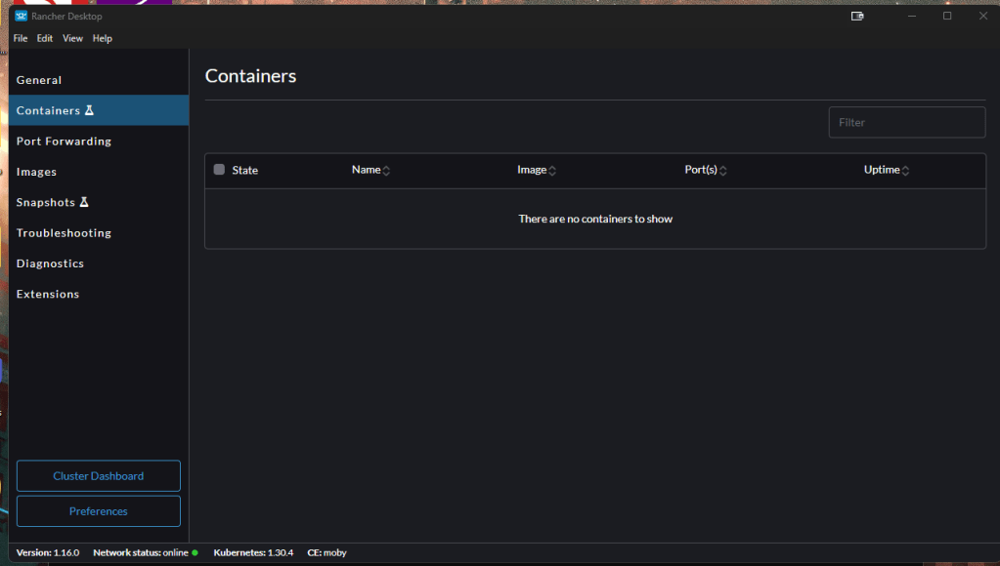
New Accepts and New Surveys coming up
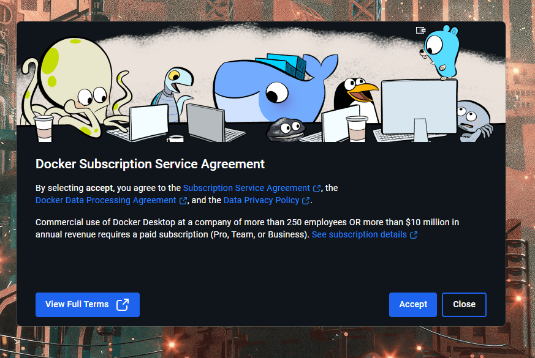
2 sides of the coin and let it load
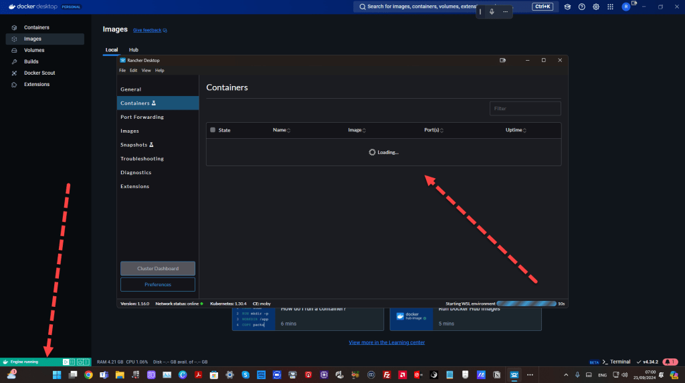
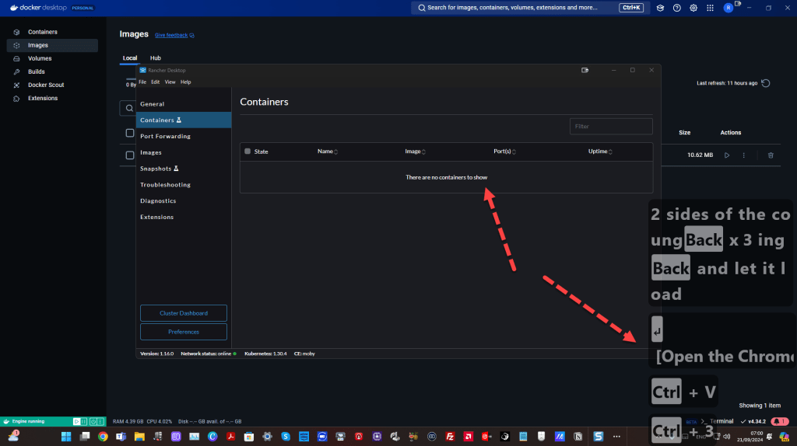
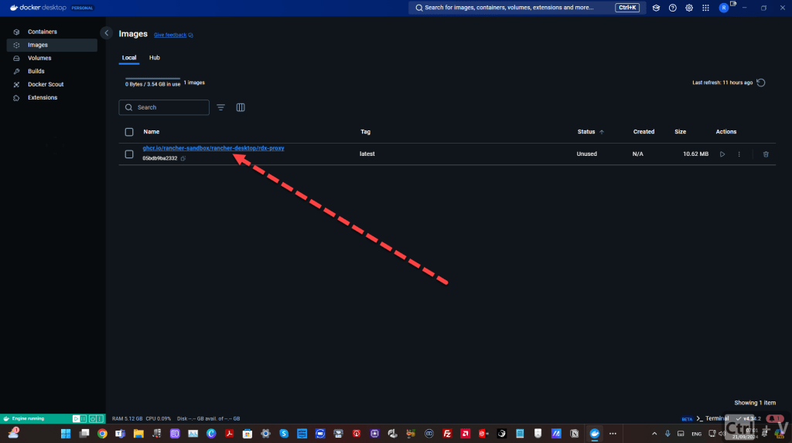
kUBERNETES RUNNING IN THE BACK
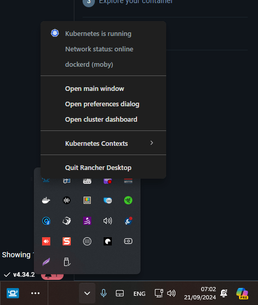
cLUSTER dASHBOARD
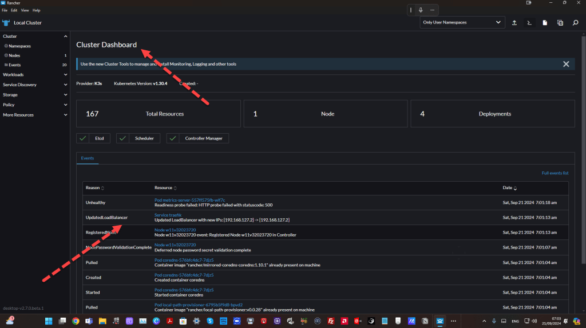
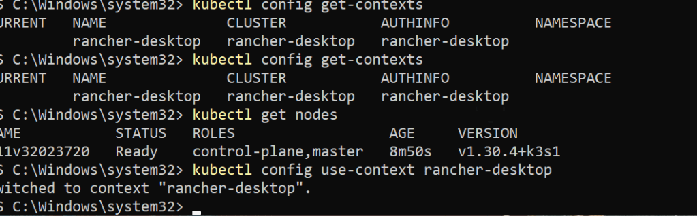
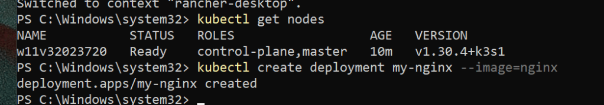
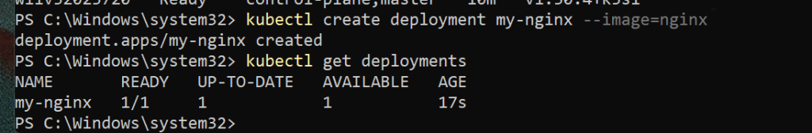
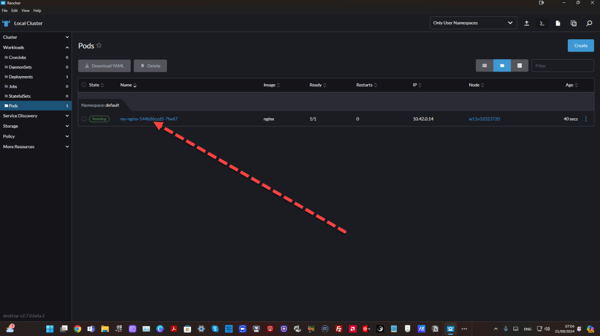
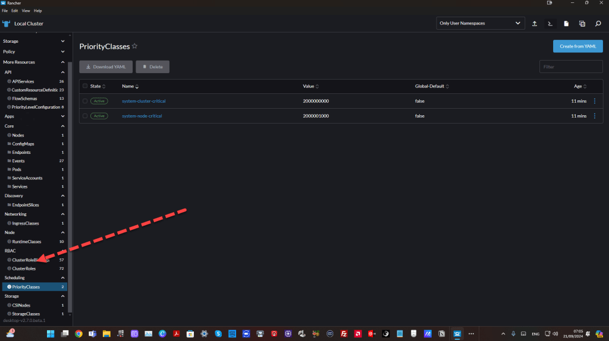
Web UI
Rancher Desktop does not have a built-in web UI like the full Rancher Server does, but you can install and access a simple Kubernetes web dashboard that works with Rancher Desktop's Kubernetes environment.
Here’s how to install and access the Kubernetes Web UI (Dashboard) with Rancher Desktop on Windows:
Step 1: Deploy Kubernetes Dashboard
You can install the official Kubernetes dashboard by running the following command:
kubectl apply -f https://raw.githubusercontent.com/kubernetes/dashboard/v2.7.0/aio/deploy/recommended.yaml
This will deploy the Kubernetes Dashboard along with the necessary resources like ServiceAccounts, Secrets, and ClusterRoles.
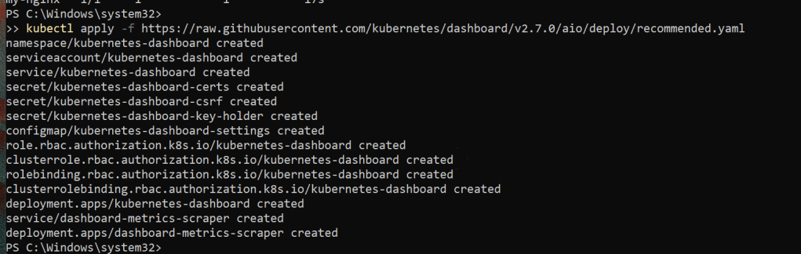
Step 2: Create an Admin User
To access the dashboard, you'll need to create a service account and a cluster role binding. Run the following commands to create them:
2.1 Create a Service Account
kubectl create serviceaccount dashboard-admin-sa
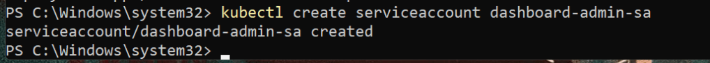
2.2 Bind the Service Account to the Admin Role
kubectl create clusterrolebinding dashboard-admin-sa-binding --clusterrole=cluster-admin --serviceaccount=default:dashboard-admin-sa
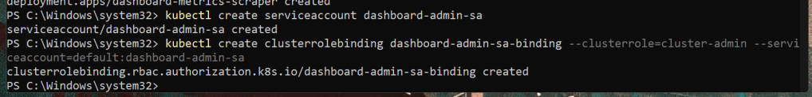
Step 3: Access the Dashboard
The Kubernetes Dashboard is not exposed on the internet by default. To access it locally, you need to create a proxy. Run this command to start a proxy to access the dashboard:
kubectl proxy
This will run a proxy server on your local machine at http://localhost:8001.
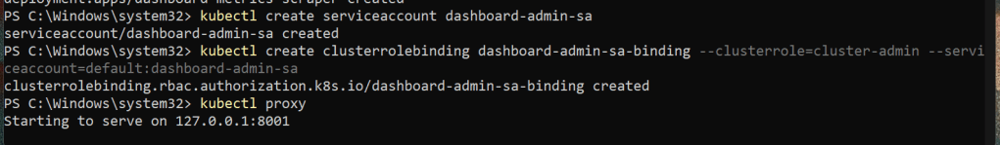
Step 4: Open the Kubernetes Dashboard
After starting the proxy, open your web browser and navigate to the following URL:
http://localhost:8001/api/v1/namespaces/kubernetes-dashboard/services/https:kubernetes-dashboard:/proxy/
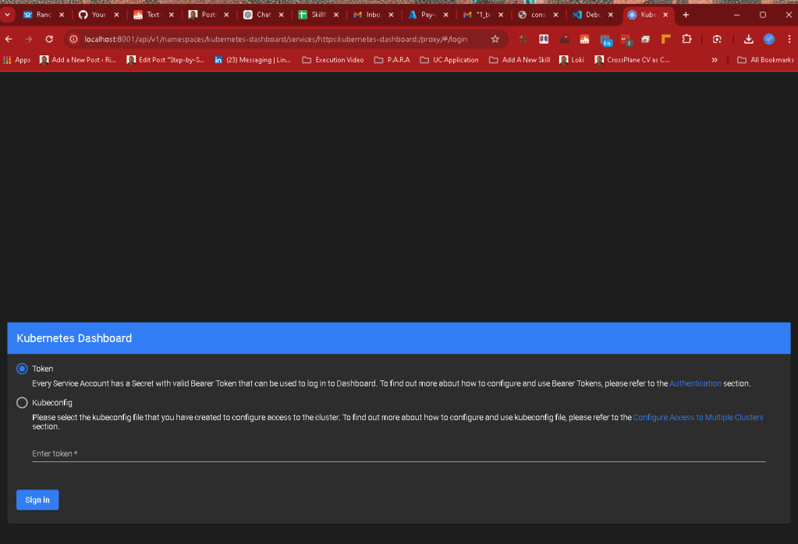
You should now see the Kubernetes Dashboard web UI.
Step 5: Get Access Token for Login
To log in, you will need an access token.
5.1 Retrieve the Token
Run the following command to get the token for the dashboard-admin-sa account:
kubectl get secret $(kubectl get serviceaccount dashboard-admin-sa -o jsonpath="{.secrets[0].name}") -o go-template="{{.data.token | base64decode}}"
This will output the token. Copy it.
5.2 Log In to the Dashboard
Go back to the web UI and paste the token in the login screen under the Token section, and hit Sign in.
Step 6: Explore the Kubernetes Web UI
Now you have access to the Kubernetes Dashboard! You can:
-
Monitor your Kubernetes resources like Pods, Deployments, and Services.
-
Check the health of your nodes and workloads.
-
Perform basic Kubernetes operations directly from the web UI.
It seems like the service account dashboard-admin-sa doesn't have any associated secrets yet, which is likely causing the issue. This usually happens when Kubernetes hasn't generated the secret for the service account.
Here are the steps to resolve the issue:
Step 1: Verify the Service Account and Secret
- Check if the service account was created correctly by running:
kubectl get serviceaccount dashboard-admin-sa
You should see an output like:
NAME SECRETS AGE
dashboard-admin-sa 1 5m
If the number of secrets is 0, it means the secret hasn't been created yet. Wait for a few minutes and try again.
- If the secret count is still
0, force Kubernetes to generate a secret by deleting and recreating the service account:
kubectl delete serviceaccount dashboard-admin-sa
kubectl create serviceaccount dashboard-admin-sa
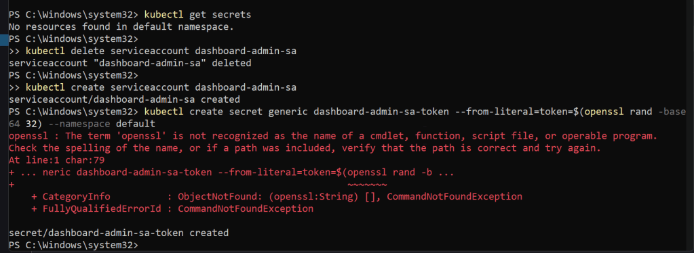
Step 2: Bind the Service Account to the Cluster Role Again
Once the service account is recreated, bind it to the cluster-admin role again:
kubectl create clusterrolebinding dashboard-admin-sa-binding --clusterrole=cluster-admin --serviceaccount=default:dashboard-admin-sa
Step 3: Check for Secrets Again
Wait for a minute or two, and check if the secret has been generated by running:
kubectl get secret
You should see something similar to:
NAME TYPE DATA AGE
dashboard-admin-sa-token-xxxxx kubernetes.io/service-account-token 3 1m
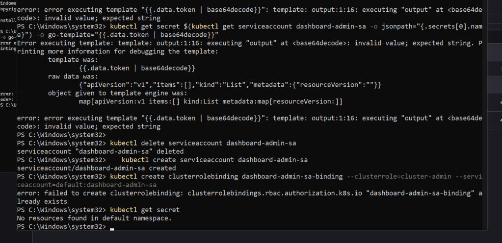
Step 4: Retrieve the Token
Now, run the following command to retrieve the token again:
kubectl get secret $(kubectl get serviceaccount dashboard-admin-sa -o jsonpath="{.secrets[0].name}") -o go-template="{{.data.token | base64decode}}"
This should now work correctly and return the token you can use to log in to the Kubernetes Dashboard.
If the Issue Persists:
If you are still having trouble retrieving the token, try running the following command as an alternative:
kubectl get secret -n default $(kubectl get sa dashboard-admin-sa -o jsonpath="{.secrets[0].name}") -o jsonpath="{.data.token}" | base64 --decode
This command manually decodes the token from the service account secret.
Let me know if this works or if you encounter further issues!
It looks like the openssl command is not recognized because it isn't installed on your system. Since openssl is typically used for generating random tokens, we can work around this by creating a simple static token manually or using a different method.
Method 1: Use a Static Token
You can manually provide a static token instead of using openssl. Here’s how to generate a simple token and proceed:
- Create a random token manually. You can just use any random string. For example:
mysupersecrettoken1234567890
- Now, create the secret using that token:
kubectl create secret generic dashboard-admin-sa-token --from-literal=token=mysupersecrettoken1234567890 --namespace default
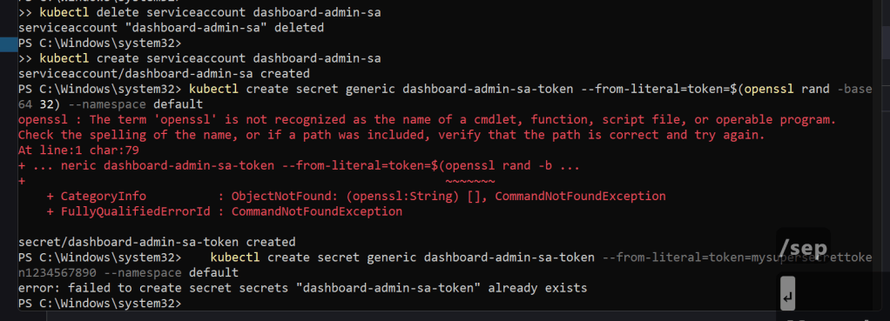
Method 2: Use PowerShell to Generate a Random Token
If you'd like to use a random token, PowerShell can generate one without the need for openssl. Here's how:
- Use PowerShell to generate a random 32-character token:
$token = [convert]::ToBase64String((1..32 | ForEach-Object {Get-Random -Maximum 255}))
- Create the secret with this token:
kubectl create secret generic dashboard-admin-sa-token --from-literal=token=$token --namespace default
Method 3: Skip Token Creation (Use a Built-in Secret)
You can also skip the manual token creation and wait for Kubernetes to generate a secret automatically after creating the service account. If you see the following command not returning any secrets:
kubectl get secrets
Run this to verify the service account creation:
kubectl get serviceaccount dashboard-admin-sa -o yaml
After waiting a few minutes, Kubernetes should automatically generate a secret associated with the dashboard-admin-sa service account.
Next Steps
Once the secret is created with any of the above methods, you can:
- Retrieve the secret and token by running:
kubectl describe secret dashboard-admin-sa-token
-
Copy the token value.
-
Log in to the Kubernetes Dashboard using the token at:
http://localhost:8001/api/v1/namespaces/kubernetes-dashboard/services/https:kubernetes-dashboard:/proxy/
Let me know how it goes!
It seems like the secret dashboard-admin-sa-token already exists in your cluster. You can either delete the existing secret and recreate it or use the existing secret for your Kubernetes Dashboard login.
Option 1: Delete the Existing Secret and Recreate It
- First, delete the existing secret:
kubectl delete secret dashboard-admin-sa-token --namespace default
- After that, recreate the secret with the token:
kubectl create secret generic dashboard-admin-sa-token --from-literal=token=mysupersecrettoken1234567890 --namespace default
This will create the secret with the specified token, which you can then use to log in.
Option 2: Use the Existing Secret
If you don't want to recreate the secret, you can retrieve the token from the existing secret.
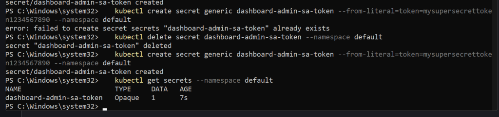
- Check the existing secrets:
kubectl get secrets --namespace default
- Describe the secret to get the token:
kubectl describe secret dashboard-admin-sa-token --namespace default
In the output, you will see a token section like this:
Name: dashboard-admin-sa-token
Namespace: default
Labels:
Annotations:
Type: kubernetes.io/service-account-token
Data
====
ca.crt: 1025 bytes
namespace: 7 bytes
token: eyJhbGciOiJSUzI1NiIsImtpZCI6IkFxxxxxx...
-
Copy the token from the
tokenfield. -
Use this token to log in to the Kubernetes Dashboard.
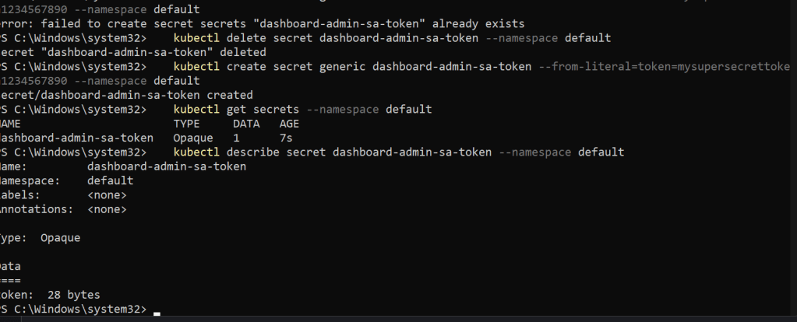
Step 3: Access the Kubernetes Dashboard
Once you have the token, navigate to the Kubernetes Dashboard login URL:
http://localhost:8001/api/v1/namespaces/kubernetes-dashboard/services/https:kubernetes-dashboard:/proxy/
Paste the token into the Token section of the login screen and sign in.
Let me know if you're able to access the dashboard or if you encounter any more issues!
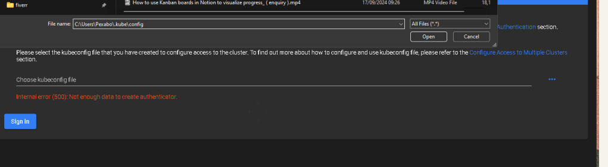
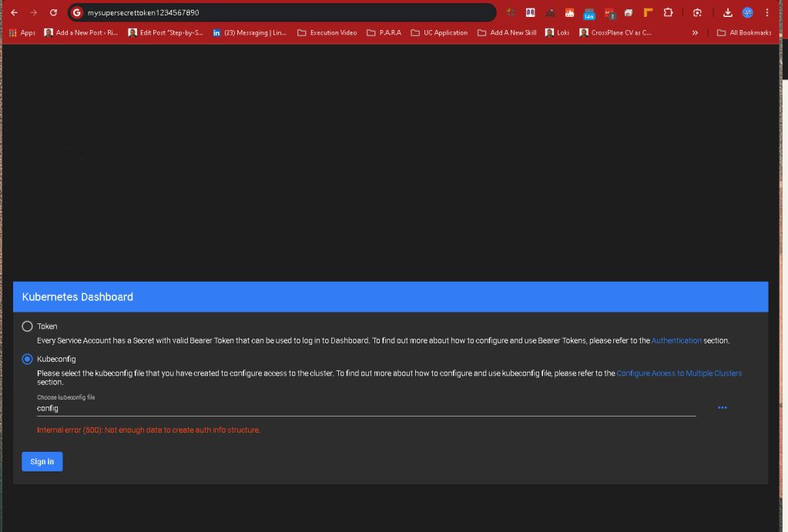
The kubeconfig file is usually located in the following default directory on your system. It stores the configuration data that kubectl uses to interact with your Kubernetes cluster.
Default Location of kubeconfig on Windows:
C:\Users\
How to Access the kubeconfig File:
- Open File Explorer and navigate to the following path:
C:\Users\
Replace <Your-Username> with your actual Windows username.
-
Inside the
.kubefolder, you should find theconfigfile, which is yourkubeconfig. -
Alternative Approach: You can quickly open the
.kubefolder by running the following command in PowerShell or Command Prompt:
explorer %USERPROFILE%.kube
This will open the .kube folder directly in File Explorer.
If you installed Rancher Desktop, the configuration file should be placed in this default location. Let me know if you need any further help!
Imported from rifaterdemsahin.com · 2024